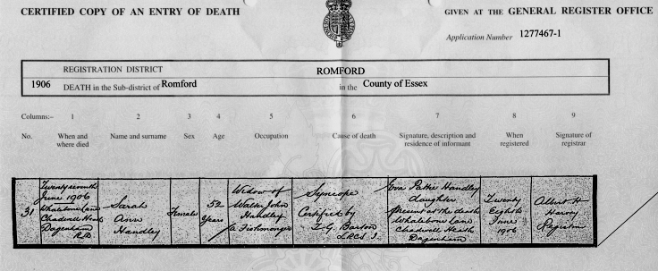

|
Sarah Ann Curle: Biographical notes
by John Winsor, April 2009.
|
|
Sarah Ann Curle was born in late 1853 in West Ham, then in Essex. Her father was Thomas Curle born 1815. Her mother was Harriet Curle born 1813. These people are my great-great-grandparents. Their lives were contemporary with that of Charles Dickens. The 1861 Census for Thomas Curle and family lists Sarah Ann then aged 8, together with her sister Jane aged 4. The family lived at 8 Church Street, West Ham. Thomas Curle's occupation is given as House Painter. The 1871 Census for John Curle and family lists Sarah Ann then aged 17. (John Curle was Sarah Ann's elder brother). This family lived in the Cripplegate district of the City of London. There is no indication whether Sarah Ann was living with them at that time or was merely visiting. Neither does the Census hold a record of the baby Arthur who was then just a few months old. In 1872 Sarah Ann married Walter John Handley, also of West Ham. The marriage was registered in the District of Mile End Old Town. There is an indication (via Ancestry) that Thomas Curle died in September 1876 aged 61. I can find no record of the death of Harriet Curle. The Census's for 1881 and 1891 list the Handley family's address as 87 Vicarage Lane, West Ham, Essex. According to Ancestry Walter John Handley died in early 1901 in Billericay, Essex aged 49 years. It appears that the entire family had moved away from West Ham during the latter half of the 1890's. (See the 1901 Census for Sarah Ann Handley and family). Walter John (senior), Sarah Ann and seven children had settled in Chadwell Heath, Dagenham. I understand that Walter John died in a lunatic asylum. The Census for 1901 shows that Sarah Ann, then widowed, was living at Beaconsfield Villas, 175 High Road, Chadwell Heath, Dagenham, Essex together with her seven youngest children. They are: Eva Pattie (20), Elsie Norah (18), Flora Adelaide (16), Kitty (Kelly?) Blanche (13), Garnet W. (8), Oscar (7) and John (4). Also living there was Sarah Ann's mother-in-law Martha Handley aged 76. Sarah Ann's death in 1906 aged 52 years:
I discovered (via Ancestry) that Sarah Ann died in Chadwell Heath in 1906 at the premature age of 52 years. I have to admit that I was unable to contain my curiosity as to the cause of death. Might this have been the consequence of a tragic accident? So I obtained a copy of the Death Certificate. This shows that Sarah Ann died at an address in Whalebone Lane, Chadwell Heath, Dagenham on 27 June 1906. (That was just three weeks before the birth of my mother who was her grand-daughter). Her eldest daughter, Eva Pattie Handley, was present. Perhaps this was her home. The cause of death is given as "syncope". This is a medical term meaning that Sarah Ann became unconscious. The implication, here, is that she died from unknown natural causes. Such an explanation would hardly be adequate today but in 1906 was evidently considered acceptable. The Death Certificate is shown below:  |